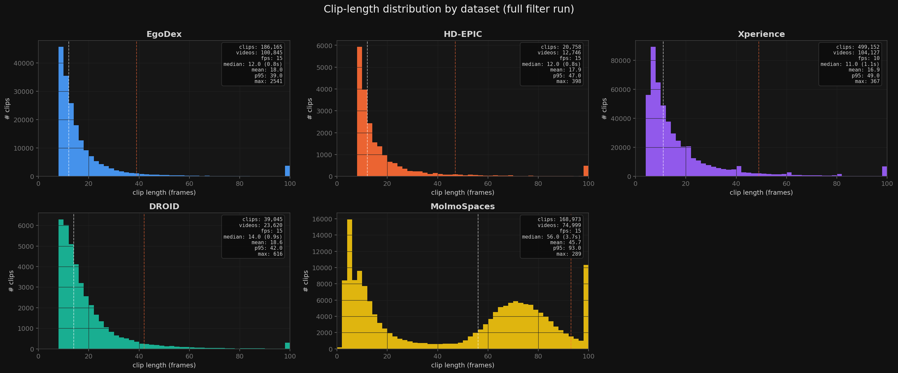
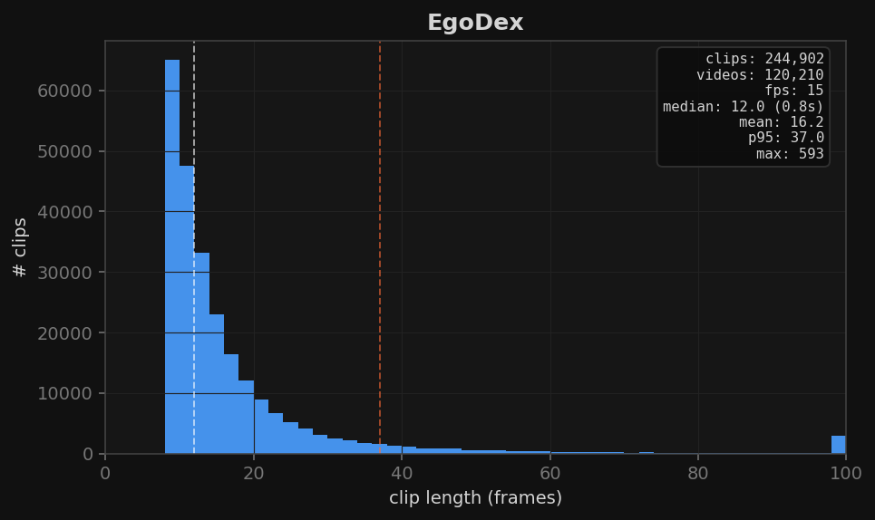
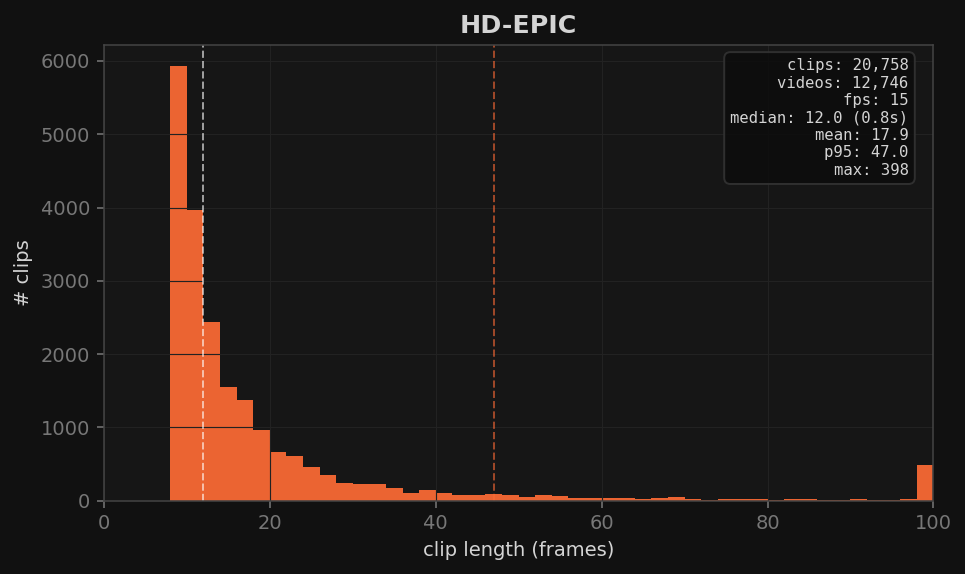
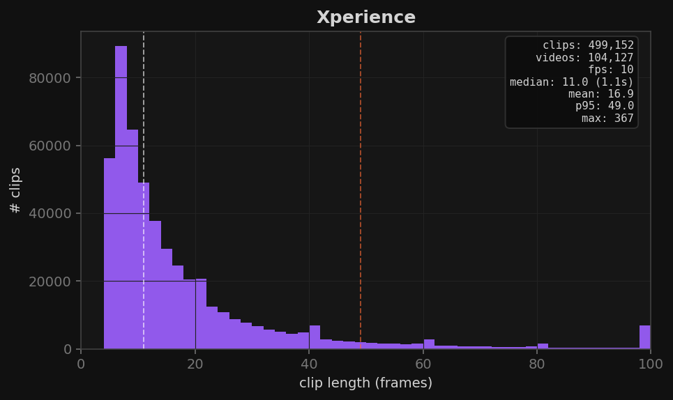
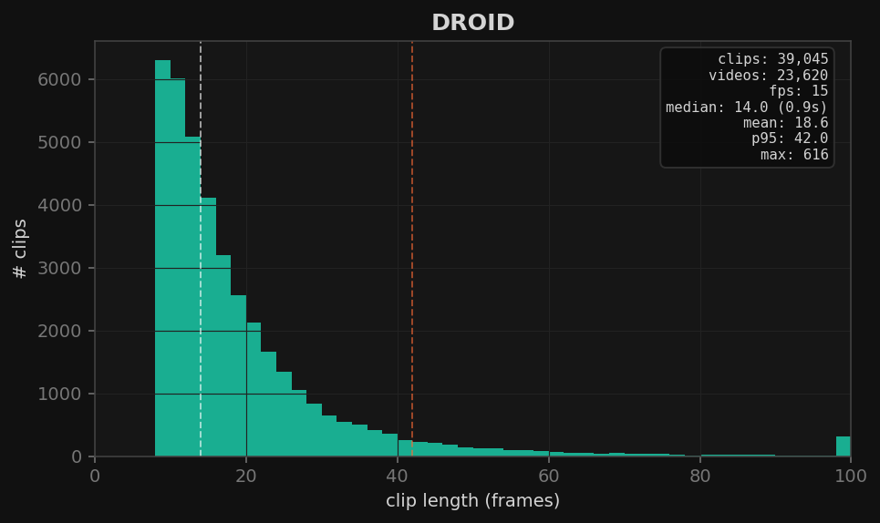
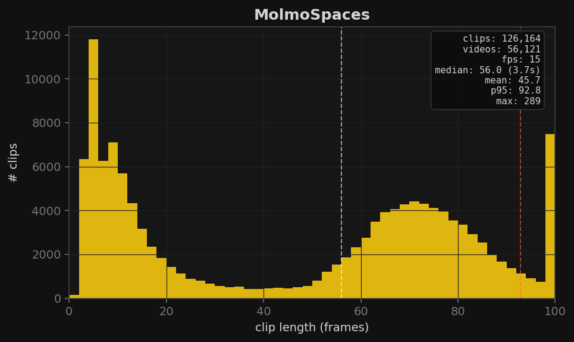
X / Y / Z coordinate histograms (density-normalized) from 500 random sampled videos per dataset. Clipped to [1st, 99th] percentile. Stats box shows mean, std, and that percentile range. Note: EgoDex / HD-EPIC / Xperience are in camera-relative frames; DROID tracks are in each camera's own OpenCV frame (meters, +Z forward); MolmoSpaces is PyBullet world frame.
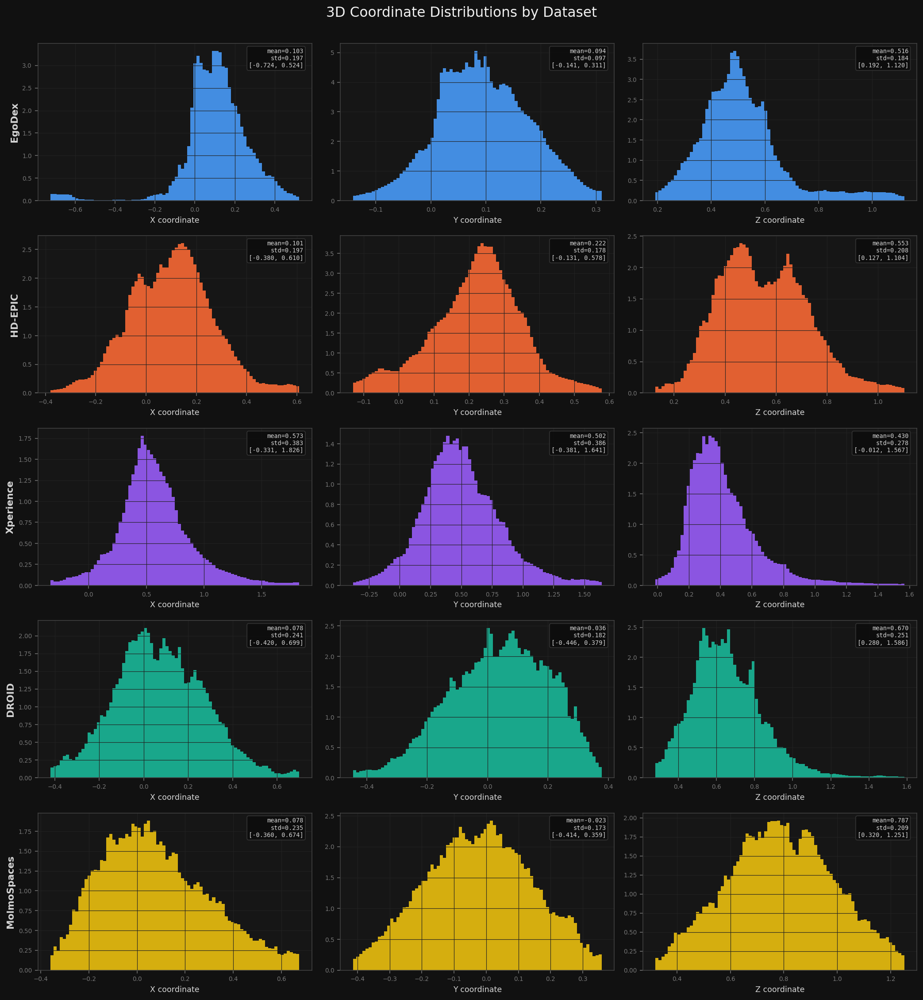
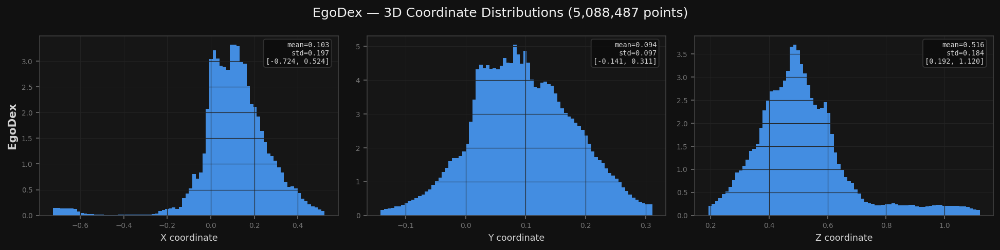
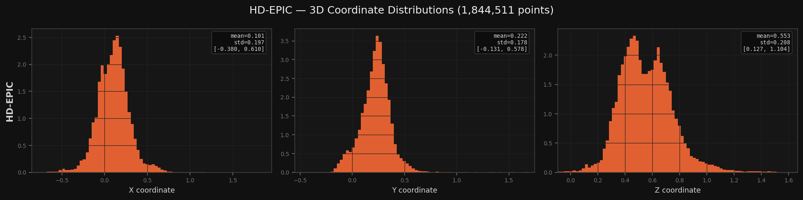
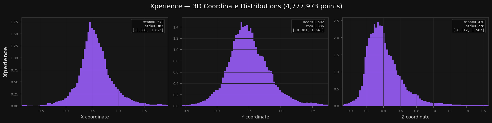
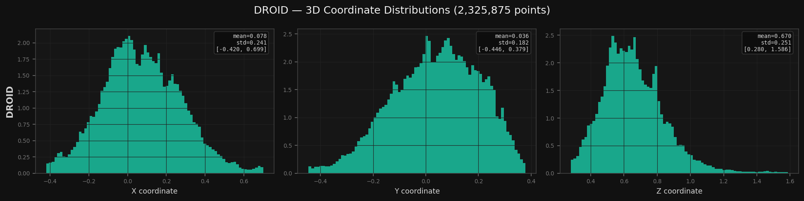
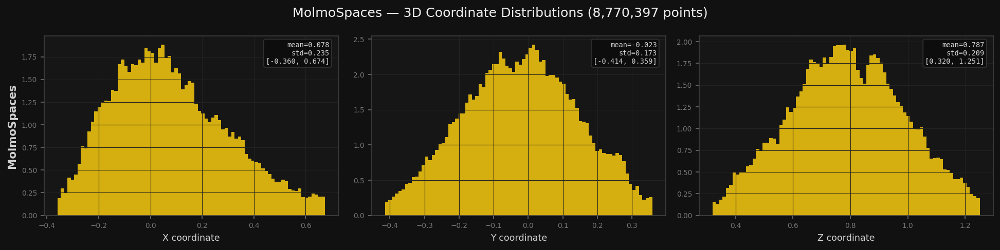
ΔX / ΔY / ΔZ distributions of points_3d[t] - points_3d[t-1],
computed only within selected clips (not across entire videos).
500 random sampled videos per dataset. Shared axis limits across all datasets.
These show the per-frame velocity distribution in 3D space for the filtered motion clips.
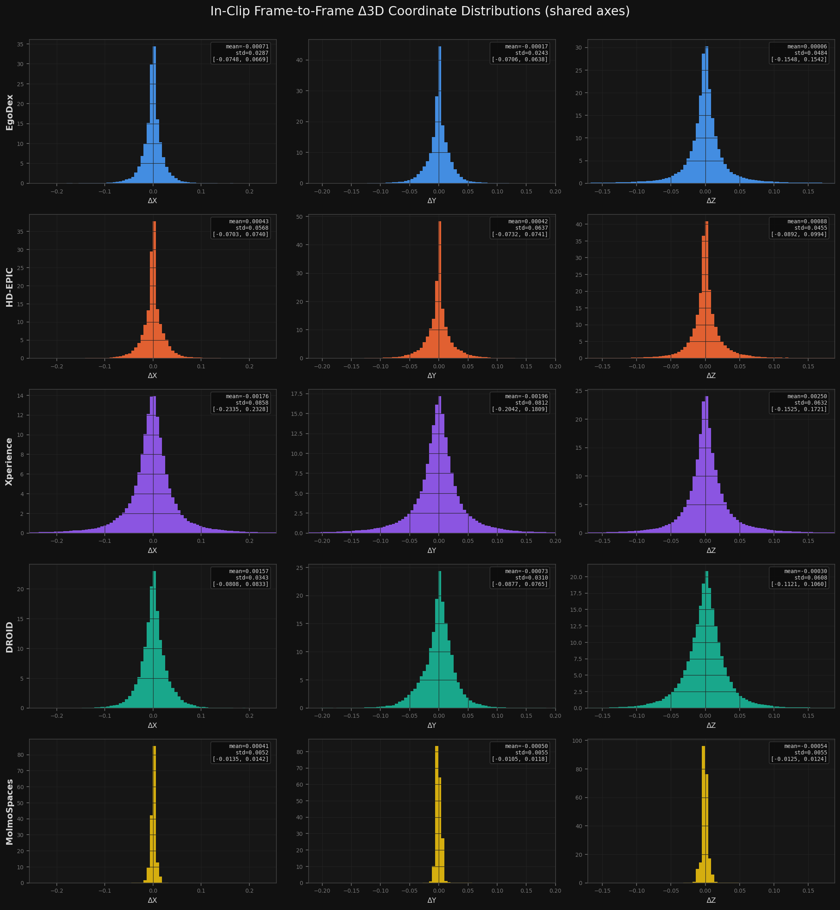
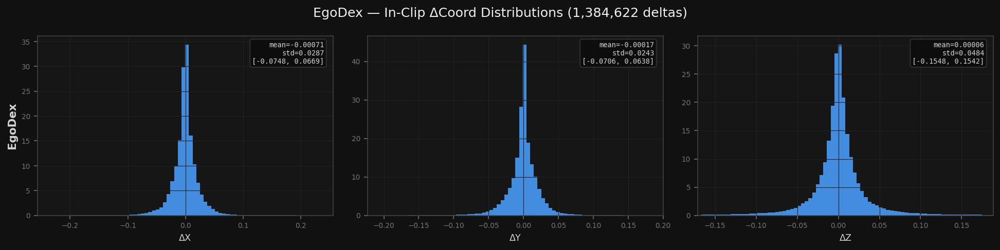
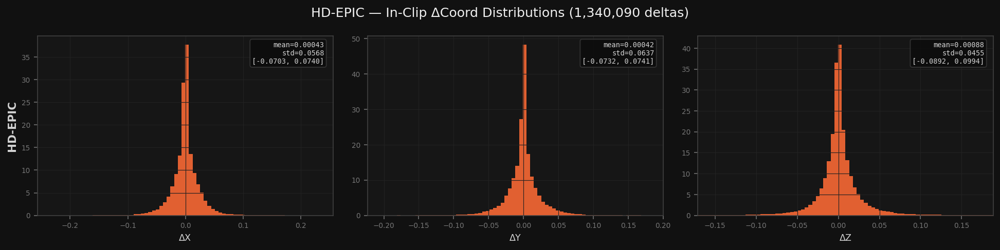
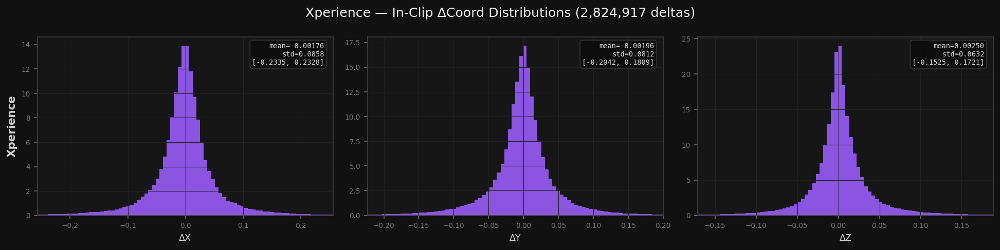
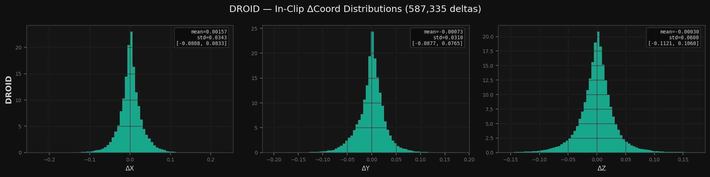
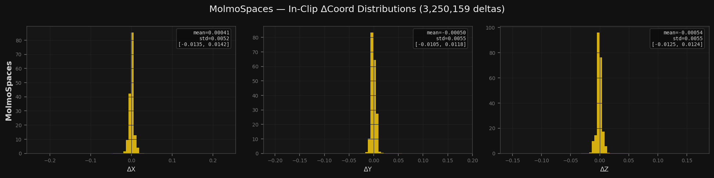